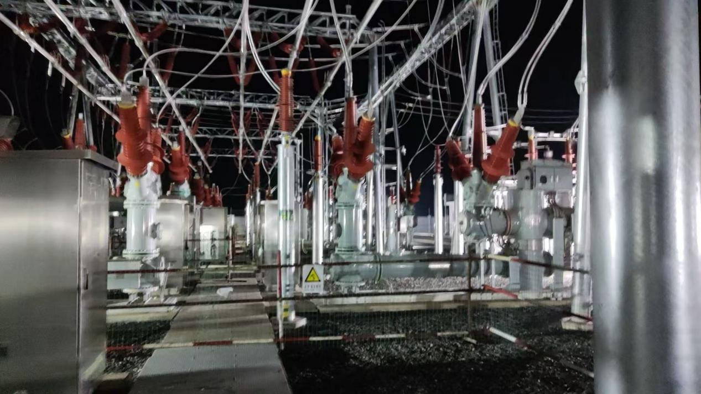
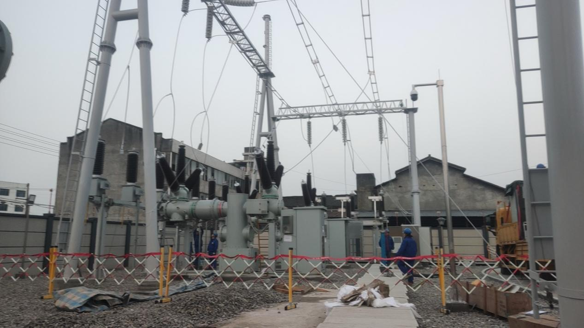

Domestic Project
三站联动筑川网：江苏京电电气助力四川电网110kV变电站新建工程纪实
近年来，四川省经济社会发展持续提速，成都及周边城市群用电负荷不断攀升，对电网结构的可靠性、灵活性和建设速度提出了更高要求。
三站联动筑川网：江苏京电电气助力四川电网110kV变电站新建工程纪实
近年来，四川省经济社会发展持续提速，成都及周边城市群用电负荷不断攀升，对电网结构的可靠性、灵活性和建设速度提出了更高要求。江苏京电电气股份有限公司（英文简称“JDEC”）凭借成熟的110kV HGIS产品，先后中标国家电网主导下的四川地区三座110kV变电站新建工程——兴隆站、西来站、通滩站，分别提供9套、5套、5套HGIS设备，并于2024年10月至2025年12月期间全部顺利投运。三座变电站如同三颗“电力明珠”，镶嵌在蜀地电网的关键节点上，为区域经济发展注入了强劲动能。

兴隆站：9套HGIS，撑起负荷中心供电脊梁
兴隆110kV变电站新建工程位于四川省成都市和泸州市负荷增长最为迅猛的区域之一。随着多个产业园区、大型居住区及商业综合体的落地，原有变电站已接近重载运行，亟需新增电源点进行分流。京电电气为该站提供了9套110kV HGIS设备，是所有三个项目中供货数量最多、间隔配置最复杂的一个。
HGIS（混合气体绝缘开关设备）兼顾了GIS的小型化、高可靠性与AIS的易维护性，特别适合在土地资源紧张、出线回路多的城郊变电站中应用。京电电气在接到中标通知书后，立即启动专项排产计划，从壳体铸造、导体加工到断路器机械特性调试，每一个环节均设立质量见证点。9套设备中包含了进线间隔、出线间隔、母联间隔及PT间隔等多种类型，对二次控制回路的一致性提出了较高要求。京电电气通过模块化设计和预制电缆，大幅减少了现场接线工作量。
2024年10月30日，兴隆站一次性通过川电调度中心验收，成功并入主网。投运后，该站分担了原110kV公义站约40%的负载，周边10kV供电半径从5.8公里缩短至3.2公里，电压合格率由99.2%提升至99.7%。国网四川省电力公司物资公司现场项目经理评价：“京电电气的HGIS设备气密性优良，三工位开关操作顺畅，且在连续72小时试运行期间未出现任何告警，表现超出预期。”
西来站：5套HGIS，服务乡村振兴与文旅发展

西来110kV变电站新建工程则承载着不同的使命。该站位于成都平原西南部，供电范围内有国家级历史文化名镇及多个现代农业产业园。随着乡村旅游和农产品深加工的兴起，季节性负荷波动大，传统设备调压能力不足。京电电气针对该站特点，提供的5套110kV HGIS均配置了有载调压联动接口，便于后续主变档位远程调节。
设备于2025年12月26日投运，正值冬季用电高峰前夕。西来站的建成结束了该区域由单一10kV长线路供电的历史，形成了双电源手拉手供电格局。尤为值得一提的是，京电电气技术服务团队在冬季低温天气下坚守现场，协助施工单位进行SF6气体密度继电器防冻检查，确保设备在零下5℃环境下仍能可靠动作。西来站投运后，当地电网故障停电时间预计每年可减少约12小时，为乡村振兴提供了“不停电”的能源保障。
通滩站：5套HGIS，跑出迎峰度夏加速度
通滩110kV变电站新建工程则是一场与时间的赛跑。该站主要为泸州通滩片区日益增长的工业及居民用电服务，要求必须在2025年夏季用电高峰前投运。京电电气从排产、出厂试验到发货仅用时45天，比常规周期压缩了20%。5套HGIS设备运抵现场后，技术人员与安装单位协同作业，将间隔对接精度控制在±0.5mm以内，气室抽真空至10Pa以下并保持24小时压降达标。
2025年6月30日，通滩站成功送电，恰好赶上了7月初的第一波高温热浪。投运首月，该站最高负载率达到82%，设备温升、局部放电等关键指标均远低于规程限值。当地供电公司运检部表示：“通滩站的及时投运，相当于为我们增加了一台150MVA的供电能力，有效避免了今夏有序用电方案的执行。”
三站合力，彰显京电电气国网供货硬实力

兴隆、西来、通滩三座变电站，虽然电压等级相同，但地理分布不同、负荷特性不同、建设节奏不同。京电电气能够同时应对三个项目的供货、技术支持及投运保障，充分体现了其作为高压开关专业制造商的项目管理能力和质量一致性控制水平。
从设备层面看，京电电气的110kV HGIS产品具有以下突出优势：
- 紧凑化设计：单间隔宽度仅0.8米，相比传统AIS节省占地约60%；
- 全密封结构：所有带电部件均封闭于不锈钢或铝合金壳体内，所有螺栓采用防腐设计，不受凝露、污秽、酸雨影响；
- 高机械寿命：断路器及隔离开关操作机构经10000次寿命试验，满足频繁操作场景；
- 智能化接口：标配IEC61850 GOOSE跳闸及在线监测接口，方便接入智能变电站系统。
从服务层面看，京电电气针对国网四川物资公司的要求，建立了一站一档的全生命周期履历，每一台HGIS设备的装配记录、出厂试验数据、现场交接试验数据均实现可追溯。此外，公司还在成都设立了区域备件中心，能够保证12小时内应急备件到达现场。
未来展望：持续深耕川蜀电网
随着成渝地区双城经济圈建设的深入推进，四川省电网投资将继续保持高位。京电电气表示，将以兴隆、西来、通滩三站的成功投运为新的起点，进一步完善适合四川盆地高湿度、多凝露环境的HGIS防潮技术，同时积极探索租赁式供电、模块化应急变电站等新型服务模式，为四川电网的可靠运行贡献更多“京电智控”。
三座变电站，三张成绩单。从2024年深秋到2025年岁末，京电电气用19套110kV HGIS设备，在巴蜀大地上写下了一部关于品质、效率与责任的故事。而这，仅仅是其服务国家电网宏大征程中的一个缩影。